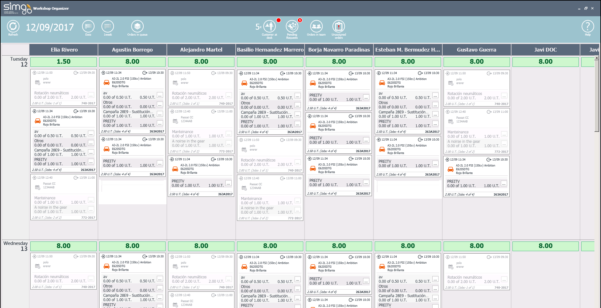

ORGANIZER
The Organizer is a panel divided in two well-differentiated areas, header and working area, and there you can find: the mechanics and the mechanic's availability, the blocks of jobs and jobs (active or paused), all day-grouped.

Header
It is the upper area of the organizer and it shows information about:
 Refresh the organizer panel.
Refresh the organizer panel.  Select the starting date to organize the workshop.
Select the starting date to organize the workshop.  Select how many weeks we want to see and scheduled.
Select how many weeks we want to see and scheduled.  Queued orders view.
Queued orders view.  Number of clients at desk.
Number of clients at desk. Number of time requests.
Number of time requests. Visualize orders containing jobs assigned to teams to assign to mechanics.
Visualize orders containing jobs assigned to teams to assign to mechanics.  Unassigned jobs.
Unassigned jobs.  Access the user help documentation.
Access the user help documentation.
Working Area
The rest of the screen is the Organizing Area where we can check the mechanics in our workshop, their availability and the block of jobs and jobs assigned to them for each vehicle.
The block of jobs give us information about:

 Reception planned date and Delivering planned date.
Reception planned date and Delivering planned date.  Iniciated jobs and jobs already iniciated (currently unattended).
Iniciated jobs and jobs already iniciated (currently unattended). - Planned time for each job and block of jobs.
- Order:

- Appointment:

- Repetitive damage:

Here we can check the information about:
-
 Scheduled date for reception and _Delivery date for the vehicle.
Scheduled date for reception and _Delivery date for the vehicle.  Already initiated jobs and jobs where we have been working.
Already initiated jobs and jobs where we have been working. - Scheduled date for each job and block of jobs.
 The Organizer groups the non-scheduled damages automatically together in the souce order.
The Organizer groups the non-scheduled damages automatically together in the souce order.
In addition, we can drag and drop jobs and blocks of jobs within a mechanic's column and between different mechanics in order to:
- Assign a job or block of jobs from one mechanic to another.
- Prioritize the jobs already assigned to a mechanic.
- Assign all jobs linked to an order (drag&drop).
- Split jobs and modify the planned time from
 .
.
 The Workshop Organizer will not split a job if the target mechanic has no availability.
The Workshop Organizer will not split a job if the target mechanic has no availability.